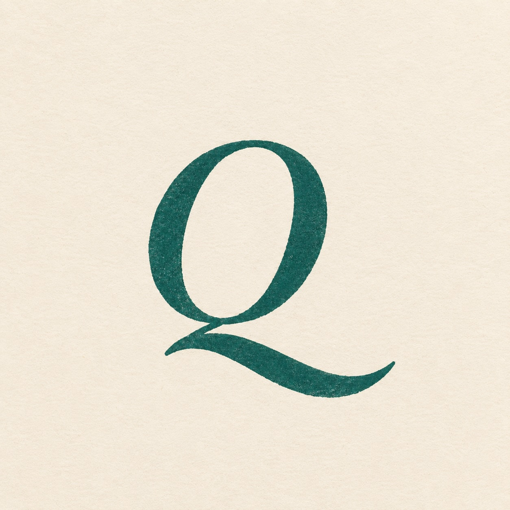

CustomQuizDu vet mindre enn du tror. Heldigvis.
En quiz om dagen er starten på løsningen. Velg blant tolv kuraterte tema — eller skriv ditt eget, fra norsk historie til japansk matkultur. Ta den alene, eller sammen med venner rundt bordet.
Start dagens quiz →Velg et tema
Tolv ferdige, eller skriv ditt eget.
Få quizen din
Norske spørsmål på sekundet, med forklaring.
Hold streaken
Én om dagen. Vi minner deg på neste.
Kjør en runde med gjengen rundt bordet — eller utfordre kompisen som påstår han kan alt om Premier League.
Lag en egen quiz på sekunder.
Tema-velger, nivåkontroll, antall spørsmål. Skriv «japansk matkultur» eller «Romerrikets fall» — og den genereres på flekken.
Åpne generatoren →


Slik lager vi spørsmålene
Hvert spørsmål skrives av en språkmodell instruert til å produsere kontrollerbare påstander — ikke synsing, ikke vagheter. Vi gir den tolv tematiske spor, et tonenivå (presisjonsfagspråk eller hverdagsnorsk), og krever fire svaralternativer hvor distraktorene skal være like plausible som det riktige.
Les mer
Hver runde går gjennom en automatisert validering før den publiseres: duplikater fjernes, modellen må vise at ett og bare ett svar er riktig, og spørsmål uten verifiserbar kilde forkastes. Du kan rapportere feil på spørsmål/svar om du mener det er teit eller feil. Vi retter.
Hvor kommer spørsmålene fra?
De skrives av en språkmodell (Anthropic Claude) som er instruert med tematisk rammeverk og en streng valideringsregel: ett riktig svar, tre plausible distraktorer, kort forklaring med kildebar logikk. Vi leser feil-rapportene fra brukerne og forbedrer instruksene fortløpende.
Koster det noe?
Dagens quiz og arkivet er gratis. En liten månedlig abonnement gir deg ubegrenset egne quizer på hva du måtte ønske, ukeskonkurransen, og lagring av streak. Detaljer kommer på lanseringsdagen.
Når kommer ny quiz?
Hver morgen kl 07:00 norsk tid. Mandag historie, tirsdag vitenskap, onsdag geografi — og slik videre. Søndag er blandet og litt vanskeligere.
Kan jeg lage mine egne?
Ja — det er hele poenget. Velg blant tolv kuraterte tema, eller skriv ditt eget (japansk matkultur, motorsykkelens historie, norske vinregioner). Du bestemmer både tema, vanskelighet og antall spørsmål. Quizen blir generert i øyeblikket og kan deles med venner.
Hva med personvern?
Vi lagrer bare det vi trenger for å vise deg streaken din og forbedre spørsmålene — ingen tredjeparts-tracking, ingen reklame. Dataen din ligger i EU (Frankfurt). Du kan slette kontoen din når som helst, og da slettes alt.
Sammenlagt poeng på dagens quiz denne uka. Logg inn og spill for å bli med — nullstilles hver mandag.
Laster …